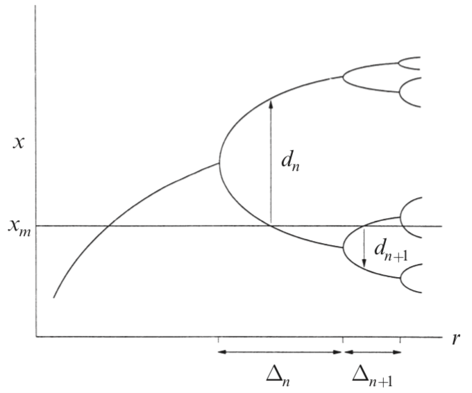
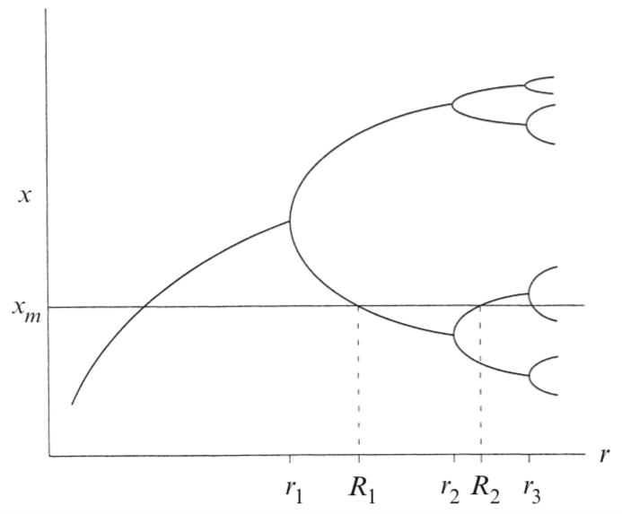
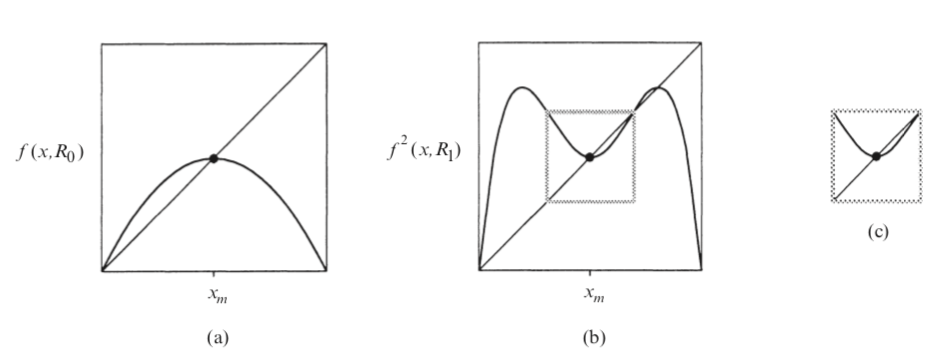
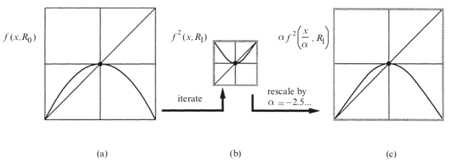
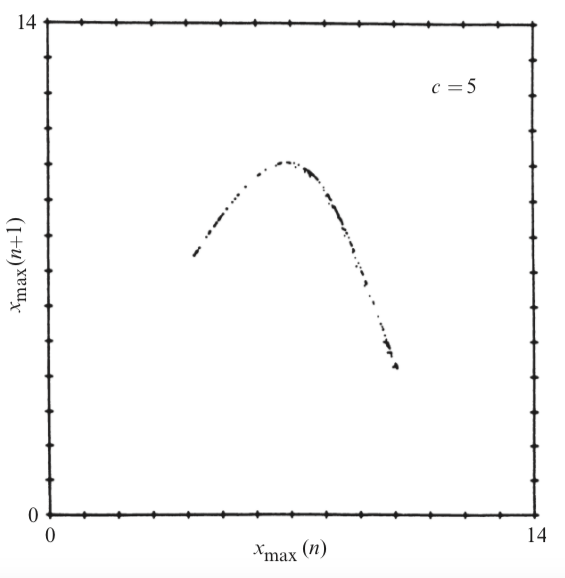
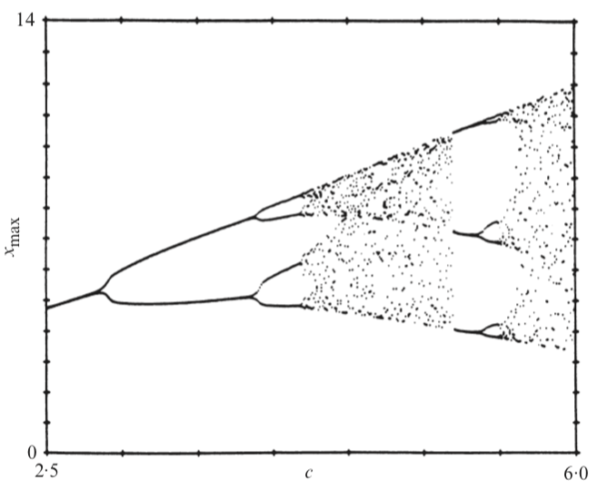

The Logistic Map
Here we explore the weird properties of the logistic map
The best way to introduce yourself to the logistic map is to watch this video ,
if you are intrested in the subject theese are probably the best 18 minutes you will ever spend on Youtube.
Most of the tecnical stuff of this page is taken from
1 The Definition
The definition of the logistic map is as simple as it gets, yet il leads to very complex and intresting behavior .
\[x_{n+1} = rx_n(1-x_n)\]
where \(0\le r \le 4 \) is a parameter
This is because the maximum of the logistic function is \(r/4\),
and if we want to keep \(x_{n}\in [0,1]\) we must keep \(r \in [0,4]\)
It was first theorized as a way to model population growth in a system with finite resouces.
We can imagine \(x_n\) as a precentage of the theoretical maximum of animals, so
the term \(rx_n\) represents the growth rate if the resouces are infinite, and the term \((1-x_n\))
makes the population shrink as it approaches 1.
2 Dynamics
Now let's plot a succession \(x_n\) with a starting point \(x_0\) and examine what happens
as we change \(r\) and \(x_0\)
Just from playing with the graph can be understood that \(x_0\) has very little effect on the long-term
behavior of the system, meanwhile changing \(r\) can make the succession evolve in very different ways.
In particular:
- For \(r\le 1\quad x_n\to 0\). This can be explained by the fact that \(r< 1\) represents
a declining population in model where \(x_{n+1}=rx_n\), and the factor \(1-x_n\) is always less than \(1\)
- For \(1< r < r_1 \), where \(r_1\) is some constant we don't know anything about yet,
the map converges to a single value
-
For \(r_1< r < r_2 \) the tends to oscillate between 2 values
-
For \(r_2< r < r_3 \) the tends to oscillate between 4 values
-
For \(r_3< r < r_4 \) the tends to oscillate between 8 values
-
After that it becomes harder and harder to see if the periods keep doubling because the constants \(r_n\)
keep getting closer together, so it seems that they converge to some constant \(r_\infty\)
-
After that, the way the system behaves is chaotic, with a "island" of stability 3
3 The Bifurcation Diagram
 Figure 1: Bifurcation diagram [source]
Figure 1: Bifurcation diagram [source]
The bifurcation diagram summarizes this (figure 1). The horizontal axis shows all possible values of \(r\) and
the vertical axis shows the set of values of \(x\) visited asymptotically from almost all initial
conditions by the iterates of the logistic equation with that \(r\) value.
The bifurcation diagram is a self-similar: if we zoom in on the above-mentioned value \(r_\infty\)
and focus on one arm of the three, the situation nearby looks like a shrunk and slightly distorted
version of the whole diagram. The same is true for all other non-chaotic points.
This is an example of the deep and ubiquitous connection between chaos and fractals. (figure 2)
 Figure 2: Bifurcation diagram zoomed [source]
Figure 2: Bifurcation diagram zoomed [source]
 Figure 3: Bifurcation diagram of the Mandelbrot Set [source]
Figure 3: Bifurcation diagram of the Mandelbrot Set [source]

Figure 4: Visual representation of \(d_n\) and \(\Delta_n\)
The most incredible property of the bifurcation diagram is that the ratio the difference between successive \(r_n\)
converges to a constant \(\delta\) called "Feigenbaum's Constant" , so let
\(\Delta_n=r_n-r_{n-1}\)
\[
\delta=\lim_{n\to\infty}\frac{\Delta_n}{\Delta_{n+1}}= 4.699\dots
\]
Not only that! if we change the function of the mapping \(x_{n+1}=f(x_n)\) the resulting bifurcation diagram
has the same constantWith a few exceptions, even the Mandelbrot set!
For the Mandelbrot set \(f(x)=x^2+r\) (figure 3)
The same goes for another constant that emerges in the bifurcation diagram of unidimentional maps. Let
\(f(x_{n+1})=f(x_n)\) be a generic map with maximum in \(x_m\), then let \(R_n\) be the intersection
between the bifurcation diagram and \(x=x_m\), and let \(d_n\) be the width of the pitchfork at \(R_n\), then
\[
\alpha=\lim_{n\to\infty}\frac{d_n}{d_{n+1}}=2.5029\dots
\]
We will talk in more detail about this two constants in the section about Renomalization
Unfortunately, just by watching the bifurcation diagram this is all we can tell, in order to have
a deeper understanding of the phenomenon we must use another visual method.
4 The Cobweb
Given \(x_{n+1}=f(x_n)\) the Cobweb works as follows:
-
Start with an initial condition \(x_0\) draw a vertical line until it intersect the graph \(f\),
that height is by definition \(x_1\)
-
Draw a horizontal line until it intersects the bisectrix \(x_{n+1}=x_n\)
-
Ok, now move again vertically towards the curve of \(f\), since the \(x\) component is equal to \(x_1\),
the line now intersects the line at \(y=x_2\)
-
Keep going
By playing with the graph you can clearly see that for low \(r\) the equilibrium points are
the ones in the intersection between \(f(x)\) and the bisectrix. This makes sense because if \(f(x^*)=x^*\)
Where \(x^*\) is the intersection point the succession stays constant.
But why for some \(r\) doesn't want to stay on \(x^*\)?.
This is because it isn't a stable equilibrium point. Just like in physics, to see if a equilibrium point
is stable or not you just have to put your system just slightly off \(x^*\) and see what it does, if in the next
iteration it gets further from the equilibrium point that it's unstable, otherwise it's stable, written in mathematical
tems...
$$
\left\{
\begin{array}{c}
\mathrm{if}\quad \Big|\frac{f(x^*+\epsilon)-x^*}{\epsilon}\Big|>1\quad \mathrm{is\: unstable}\\
\mathrm{if}\quad \Big|\frac{f(x^*+\epsilon)-x^*}{\epsilon}\Big|<1\quad \mathrm{is\: stable}\\
\mathrm{if}\quad \Big|\frac{f(x^*+\epsilon)-x^*}{\epsilon}\Big|=1\quad \mathrm{we\: don't\: know}
\end{array}
\right.
$$
Since \(\epsilon\) is small we can expand \(f\) around \(x^*\)
\[f(x^*+\epsilon)=f(x^*)+f'(x^*)\epsilon\]
And if we substitute this in the system above
I have written that if \(|f'(x^*)|=1\;\;\) \(x^*\) is stable because for the logistic (and for most functions) it means that
you are either passing throught the regime where \(x_n\to0\) to the one where \(x_n\to c\in (0,1]\),
but \(\lim_{\epsilon\to 0}c=0\), so \(x^*=0\) is a stable point. Or you are right on the first bifurcation,
so the function oscillates in between two points that get closer and closer toghether as \(\epsilon\to 0\).
Let me reiterate that this does not hold for all functions, but we are going to pretend that it does for
sake of simplicity.
$$
\left\{
\begin{array}{c}
\mathrm{if}\quad |f'(x^*)|>1 \quad\mathrm{is\: unstable}\\
\mathrm{if}\quad |f'(x^*)|\le1\quad \mathrm{is\: stable}
\end{array}
\right.
$$
If \(|f'(x^*)|=0\) than the function is "Superstable" in \(x^*\), this means that it converges faster than
exponential.I have mentioned it because the superstable points will be useful later
For the logistic map \(f'(x)=r(1-2x)\) and the fixed point are found solving \(x^*=f(x^*)=rx^*(1-x^*)\),
which has as solutions \(x^*=0\) and \(x^*=1-1/r\). The latter one of which is in the range of allowable
\(x\) only if \(r\ge 1\)
Let's study the stability by calculating the derivative
$$
\left\{
\begin{array}{c}
f'(x^*=0)=r\quad\rightarrow\quad \mathrm{stable\: for\: r\le1}\\
f'(x^*=1-1/r)= 2-r \quad\rightarrow\quad \mathrm{stable\: for\:1\le r\le3}
\end{array}
\right.
$$
Studying \(f'\) we can only calculate \(r_0\) and \(r_1\), if we want to know more about stable Cycles
we need to study \(f^2(x)=f\big(f(x)\big)\), \(f^4(x)\), and so on...
This is because if we end up in a stable 2-cycle it means that \(x_{n+2}=f^2(x_{n})=x_{n}\), the same idea
goes for any \(c\)-cycle. You can see it visually by setting the cobweb for \(c=1\) and \(r\) slightly
bigger than 3 so that you have a 2-cycle and than changing \(c=2\)
As you can see the cobweb converges to one of the 2 values the function oscillates with. The same goes if you
put the system in a generic \(c\)-cycle.
Just like we did before we can study the stability of the 2-cycle by studying \(f^2(x)\) and
\(\big(f^2\big)'(x)\). The resultin formula is a quartic polynomial, but since \(x^*=0,1-1/r\) are still
solutions, it can be factorized in this way:
\[
f^2(x)=r^2x(1-x)\big[1-rx(1-x)\big]
\]
The temn in the square parenthesis gives us this two solutions
\[
x_{1,2}^*=\frac{r+1\pm\sqrt{(r-3)(r+1)}}{2r}
\]
since we want them to be physical solutions we want \((r-3)(r+1)\ge0\), thus a 2-cycle
exists for \(r>3\)
To study the stability we calculate the derivative in one of the two points
\[
\big(f^2(x_1^*)\big)' =f'(x_1^*)f'(x_2^*)=r^2(1-2x_1^*)(1-2x_2^*)=
\]
\[
=r^2\big[1-2(x_1^*+x_2^*)+4x_1^*+x_2^*\big]=r^2\big[1-2(r+1)/r+r(r+1)/r^2\big]=
\]
\[
=4+2r-r^2
\]
Therefore the cycle is stable for \(|4+2r-r^2|\le 1\), i.e. for \[3\le r\le 1+\sqrt 6\]
From now on a few more analytical results can be obtained, but they are much harder and
they don't really give much insight, so we are going to skip them.
4 Renomalization
So far we have explained how to calculate when the bifurcation occur, this can help us to estimate the
Feigenbaum's constant, but there is a much more efficent and general way to calculate it and to explain
why it comes up the same in every generating function \(f\), and it's by using renormalization theory.
4.1 Finding \(\alpha\)

Figure 5: Schematic diagram that shows where are the \(R_n\)
First we introduce some notation. Let \(f(x,r)\) denote a unimodal map that undergoes a period doubling route to
chaos as \(r\) increases, and suppose that \(x_m\) is the maximum on \(f\). Let \(r_n\) the value of \(r\) at which
the \(2^n\)-cycle, and let \(R_n\) the value of \(r\) at which the \(2^n\)-cycle is superstable.
A \(n\)-cycle to be superstable has to satisfy that
\[
\big(f^{n}(x^*,R_n)\big)'=\prod_{i=1}^{n}f'(x_i^*,R_n)=0
\]
Therefore \(x_m\in\{x_i^*\}\), consequently a simple way to locate \(R_n\) is to intersect the bifurcation
diagram with \(x=x_m\). (figure 4)
Now let's take a look at \(f(x,R_0)\) and \(f^2(x,R_1)\) (figure 5), as you can see the
image (c) looks like a smaller rotated version of (a)

Figure 6: confront between \(f(x,R_0)\) and \(f^2(x,R_1)\)
Now we "Renormalize" the image in (c) such that it's as similar as possible to \(f(x,R_0)\), to do so we move
the origin of \(x\) such that \(x_m=0\), than we blow it up by a factor \(|\alpha|> 1\) in both direction
and invert both axis \((x,y)\to(-x,-y)\).
We can do both operations at once by taking the scaling factor \(\alpha\) negative. Doing so is equivalent
to replacing \(f^2(x,R_1)\) with \(\alpha f^2(x/\alpha,R_1)\). Now we can express mathematically that they
are similar like so
\[
f(x,R_0)\approx\alpha f(x/\alpha,R_1)
\]
You can see it represented in the figure below
The reason this \(\alpha\) is one of the Feigenbaum's constans is that when we renormalize we elongate the \(x\)
axis by \(\alpha\), so effectively, in the bifurcation diagram we widen the pitchforks by \(\alpha\).

Figure 7: Renormalization procedure between \(f(x,R_0)\) and \(f^2(x,R_1)\)
Renormalizing between \(f(x,R_0)\) and \(f^2(x,R_1)\) is approximate, but the good part is that the more
you renormalize, the more precise it becomes. For example \(f^2(x,R_1)\approx\alpha f^4(x/\alpha,R_2)\) is
a better approximation than the one between \(f\) and \(f^2\).
It is possible to concatenate \(n\) of this rinormalizations like so
\[f(x,R_0)\approx \alpha^nf^{2^n}\bigg(\frac{x}{\alpha^n},R_n\bigg)\]
And it is possible to renomalize infinitely
\[\lim_{n\to\infty}\alpha^nf^{2^n}\bigg(\frac{x}{\alpha^n},R_n\bigg)=\nu g_0(x/\nu) \]
In the end you get this function \(g_0(x)\) that is a universal function. Since it is obtained
by zooming \(n\to\infty\) times by \(\alpha\) it has this two important properties:
-
It only exists if \(\alpha\) is chosen correctly (\(\alpha=-2.5029\dots\)), otherwise you would zoom too much or too little
-
It is indipendent of the original shape of \(f\). This is because we keep zooming closer and closer
into the maximum of the function, so the only thing that remains is the order of the maximum
Keep in mind that it doesn't depend on the coefficient, just the order. This is because the only
thing we want when renormalizing is that the renormalized function resembles the original. The
procedure we use assures us that the coefficient of the first non-zero order of the taylor expantion
stays constant.
Since the memory of the first non-zero coefficent of the taylor expantion is engraved in \(\nu\), different
generating functions \(f_i\) will have different \(\nu_i\), but without
loss of generality we can set \(\nu=1\) for the logistic map.
Different universal function \(g_i(x)\) can be generated starting with \(f(x,R_i)\) instead of \(f(x,R_0)\)
\[
\nu g_i(x/\nu)=\lim_{n\to\infty}\alpha^nf^{2^n}\bigg(\frac{x}{\alpha^n},R_{n+i}\bigg)
\]
The case where we are on the onset of chaos \(R_i=R_\infty\) is the most important since then
\[
f(x,R_\infty)\approx\alpha f^2(x/\alpha, R_\infty)
\]
and we get the universal function \(g\equiv g_\infty\) that is self referentialI have already set \(\nu=1\)
\[
g(x)=\alpha g^2(x/\alpha)
\]
This \(g\) is special because of this formula, it allows us throught some clever math to estimate \(\alpha\)
whithout doing lots of calculations, we just have to taylor expand both terms and equate the coefficient of the
same order.
\[
g(x)=c_0+c_1x+c_2x^2+c_2x^3+\dots
\]
We can change the definition of \(g\) by changing \(\nu\) we can we can set \(g(0)=c_0=1\)
at \(x=0\), and since the \(x_m=0\) \(g'(0)=c_1=0\), so
\[
g(x)=1+c_2x^2+c_3x^3+\dots
\]
By equating the coefficients up to the seventh order can be found \(c_2 \approx 1.5276\), \(c_4\approx 0.1048\)
and \(\alpha\approx -2.5029\)
If you want a more precise measurament of \(\alpha\) you can just consider higher and higher orders of the Taylor
expantion, using this theory also explains the value \(\delta\), but it uses much more complicated mathematical
methods, so we are going to skip it, instead we are going to find an approximation of \(\delta\) but it isn't
in the form of a series.
4.2 Finding \(\delta\)
Let \(f(x,\mu)\) be a unimodal map that undergoes the period-doubling route to chaos. We are going to define
the variables such that the 2-cycle is born when \(x=0\) and \(\mu=0\), and than we are going to taylor expand
around \(x=0\).
The 0th order coefficient of the taylor expantion has to be zero because when \(\mu,x=0\)
\(x_{n+1}\) must be \(0\). The first order coefficient of the taylor expantion must be equal to \(-(1+\mu)\)
because when \(\mu=0\) we must have that \(|f'(x)=1|\).
We are going to neglet all higher order of \(x\) and \(\mu\), and that's why our results will be approximate.
\[
x_{n+1}=-(1+\mu)x_n + ax_n^2
\]
We can set \(a=1\) since it's equivalent to rescaling \(x\to x/a\), so in the end \[x_{n+1}=-(1+\mu)x_n + x_n^2\]
What we are goint to try to do is the following:
-
For \(\mu>0\) there is a 2-cycle with fixed points \(x_{1,2}^*\)
-
If we keep increasing \(\mu\), \(x_{1,2}^*\) will eventually period double giving rise to a 4-cycle
-
When this happens \(f^2\) will have the same algebraic structure near, say, \(x_1^*\)
-
Try to renormalize \(f^2(x_1^*)\) into \(f(0)\) and see what it comes up
So let's start by calculating \(f(x_{1,2}^*)\)
$$
\left\{
\begin{array}{c}
x_1^*=-(1+\mu)x_2^* + \big(x_2^*\big)^2\\
x_2^*=-(1+\mu)x_1^* + \big(x_1^*\big)^2
\end{array}
\right.
$$
Solving the system we have that
\[
x_{1,2}^*=\frac{\mu\pm\sqrt{\mu^2+4\mu}}2
\]
Now we can take the first step for the renormalization: Traslating the origin, we are going to set in
\(x^*=x_1^*\)
We could have chosen \(x_2^*\) it doesn't matter
and let's see how \(x^*+\eta_{n+1}=f^2(x^*+\eta_n)\) behaves by expanding it up to the second order, and we get
\[
\eta_{n+1}= (1-4\mu-\mu^2)\eta_n + C\eta_n^2 + \dots
\qquad C= 4\mu +\mu^2 -3\sqrt{\mu^2+4\mu}
\]
To rescale \(\eta\) let \(\tilde x_n=C\eta_n\), and let \(\tilde\mu=4\mu-\mu^2-2\) then the equation above becomes
\[
\tilde x_{n+1}=-(1-\tilde\mu)\tilde x_n+ \tilde x_n^2+\dots
\]
This equation is very similar to the original, so
\[
f(x,\mu)\approx f^2(\tilde x, \tilde\mu)=f^2(x^*+ x/C,4\mu+\mu^2-2)
\]
remeber that \(x^*=\frac{\mu+\sqrt{\mu^2+4\mu}}2\) and \(C= 4\mu +\mu^2 -3\sqrt{\mu^2+4\mu}\)
Because of the fact that the system has the same structure when \(\tilde\mu=\mu\) the system undergoes a bifurcation. It is possible to estimate it in terms of \(\mu\)
by solving \(4\mu_2+\mu_2^2-2=\mu=0\) we get the solution \(\mu_2=-2+\sqrt 6\)
I called it \(\mu_2\) because this represents the moment where the bifurcation happends for the second time,
from now on i will use this notation, consequently, \(\mu_1=\mu\) and \(\tilde\mu_1=\tilde\mu\)
As before it is possible to renormalize further by linking
\[
f^{2^n}(x,\mu_n)\approx f^{2^{n+1}}(\tilde x,\tilde\mu_n)
\]
and now the way you find \(\mu_{n+1}\) is by setting \(\tilde\mu_n=\mu_n\)
\[
\mu_n=4\mu_{n+1}+\mu_{n+1}^2 -2
\]so
\[\mu_{n+1}=-2\sqrt{6+\mu_{n}}\]
And at the onset of chaos we have that
\[
\mu_\infty=4\mu_\infty+\mu_\infty^2-2\quad \rightarrow\quad \mu_\infty=\big(\sqrt{17}-3\big)/2\approx 0.56
\]
For the logistic map this give us a pretty good estimation of \(r_\infty\), all we have to do is
add 3 to the result. With out method \(r_\infty\approx 3.56\), while the exact result is \(r_\infty= 3.57\dots\)
Now the thing we all have been waiting for: The estimation of \(\delta\)
For \(n\gg 1\) \(\mu_n\) should converge geometrically to \(\mu_\infty\), so we have that
\[
\delta=\lim_{n\to\infty}\frac{\mu_{n}-\mu_\infty}{\mu_{n+1}-\mu_\infty}
\]
Since this tends to \(0/0\) we can use de l'Hopital's rule
\[
\delta=\frac{d\mu_{n}}{d\mu_{n+1}}\bigg|_{\mu_{n+1}=\mu_\infty}=2\mu_\infty+4\approx 5.12
\]
It's off by 10% the true value of \(\delta=4.67\dots\)
5 The Logistic map for differential equations
Most real life systems are way more complex than 1-D maps and most of the times evolve following differential
equations, yet The bifurcation diagrams shows up in many situations. To see why let's look at The Rossler system
witch is a set of three differential equations:
$$
\left\{
\begin{array}{c}
\dot x = y-z\\
\dot y= x+ay\\
\dot z= b+z(x-c)
\end{array}
\right.
$$
This system contains only one non linear term, for this example we are going to set \(a=b=0.2\) and change \(c\)
The system in order to be chaotic needs to be in 3 dimentions otherwise it can't cross itself

Figure 8: Relation between successive maximums for the Rossler map for \(c=5\)

Figure 9: Bifurcation diagram for the Rossler map
As you can see the way it behaves when changing \(c\) resembles the behavior of the logistic map. To compare these results to
those obtained with the logistic map we are going to compare successive local maxima of \(x(t)\), Then we plot
\(x_{max}(n+1)\) vs. \(x_{max}(n)\) where \(x_{max}(n)\) is the \(n\)-th maximum. This relation between successive maximums for
the rossler map closely resembles the logistic map, and that is what gives us this uncanny resemblance.
(figure 8)
By plotting all the maximums as \(c\) the bifurcation diagram shows up. Both the period doubling
route to chaos and the 3-period window in present.
Unfortunately not all attractors have associated one-dimentional maps, to be able to have one they need to
be very flat, so while the theory applies to mildly chaotic systems, it does not apply to fully turbolent systems
6 Applications in Real Life
This part will be treated as a Further reading section because I didn't had the time to go in detail in
Real life application, what i can say is tt has been show that:
-
The water dripping from a faucet undergoes the period doubling route to chaos as
the flux increases
-
Fibrillating hearts A heart is fibrillating when it beats irregurally, if untreated it leads to death
become so via the the period doubling route to chaos , and scientists used the knowledge
from the logistic regression to control chaos in a fibrillating heart and lead it to beat normally again
-
Covection of the liquid mercury in a box with a thermal difference between the top and the bottom
undergoes the period doubling route to chaos as the thermal difference from the top and the bottom increases